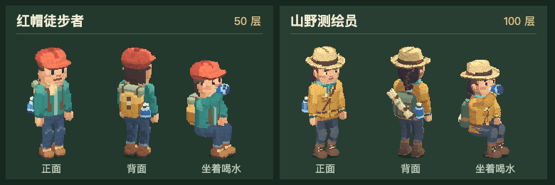

红帽徒步者和山野测绘员可以共用一次迈步、一次挥手或一次喝水。动作给出关节位置，两个人物分别把自己的鞋、衣袖、脸和装备画进水平切片。镜头转到侧面时，程序把同一批像素按行或列重排，再用 Canvas 2D 从远到近叠画。
新人物怎样套用已有动作
动作工坊已把体型、像素外观和动作分别注册。学龄儿童和学步幼儿可以使用同一段跑跳，妈妈与宝宝的互动则声明两个角色和各自要达到的接触点。打开动作工坊 · 阅读人物与动作接入规范 v1

- 对齐身体坐标
- 以脚底为高度零点，x 轴朝前、y 轴朝人物左手、z 轴向上。两个人物共用同一副成人骨架，髋、膝、踝和肩、肘、腕按同样的顺序连接。把裤腿、衣袖沿对应的关节画出，鞋跟随脚踝，帽子和头发跟随头部。
- 对齐接触点
- 走路由承重脚的落点决定，坐下由座面高度决定。喝水还用到头部的嘴边位置和背包上的瓶扣。当前约定的嘴边坐标为 (5.6, −0.45, 37.6)，水瓶收起时的瓶口在躯干坐标 (−4.85, −6.65, 26.8)。如果新人物的四肢比例或嘴巴位置相差较大，应先校准骨长、接触点和握姿。
- 决定画多细
- 徒步者使用 50 层，每层 40 × 44 像素。测绘员使用 100 层，每层 80 × 88 像素。两者的身体单位和场景身高相同。测绘员的帽带、胸袋折图、辫子与背部地图卷在更密的切片上绘制，人物画面单独按屏幕分辨率合成。打开「人物近看与切片」，可以转到背面看皮扣和卷起的纸边。
在喝水途中点「定格」，然后切换两个人物。动作的时间、手腕、瓶口与落脚位置都会保留，可以直接检查新外观是否对位。
在代码里新增同骨架人物时，提供自己的调色板 materials 和绘制函数 paint(pose, brush, ink)，再加入页面的人物列表。绘制函数读取同一个 pose，例如用 pose.arms 画袖口，用 pose.blink 画闭合的眼睑。切片密度由人物独立选择。
三种做法的取舍
- 逐帧画精灵图
- 美术可以精确控制每帧的剪影和停留时间，很适合眨眼、表情或固定方向的短动作。若画的是屏幕看到的整个人物，新朝向和新装备都可能需要额外帧。本项目将这条路线留给局部细节。Aseprite 的逐帧动画工作流
- 平面分件骨骼
- 把头、手臂和衣服各自画成图，再用关节驱动很方便。若只给一张正面手臂图，转到正侧面时还要补轮廓和遮挡层次。这里借用关键帧与分轨混合的做法，关节驱动的是有厚度的像素部件。Spine 的关键帧 · Spine 的动画轨道
- 关节驱动像素切片
- 场景采用这条路线。同一姿势供各个镜头角度使用。它的成本在于生成姿势时要重新填色和计算外露表面的明暗，抬手等大动作也要预留透明边界。
走路和挥手怎样组合
走路先落脚。支撑脚保存步道上的世界坐标，另一只脚沿弧线迈向下一落点。髋部随身体前移，再用两段固定的腿长算出膝盖的位置，这叫反向运动学（IK）。停止行走时，后脚会收回到支撑脚旁。折返时，试作先收脚，再以双脚中心为轴原地转身。Ryan Juckett 的两节 IK 推导 · Kovar 等人关于触地滑步的研究
挥手从肩传到手掌。抬臂、左右摆手和收手各有关键姿势。关键帧给肩的角度和肘的弯曲量，依次算出肘、腕和掌心的位置，这叫正向运动学（FK）。这条动作轨只覆盖右臂，腿与另一条手臂继续原来的步态。Spine 关于局部动作覆盖的说明
镜头独立更新。当前实现每秒采样 20 次动作，新姿势生成后按需建立切面图集。定格后拖动镜头会重用已有姿势。早期的徒步者切片为 40 × 28 像素，步道里的徒步者左右各加了 8 个透明像素，给抬手留出空间。
木凳、水瓶和自然站姿
人物默认是原来的 60%，可以在 45% 至 110% 之间调节。鞋、衣服、背包、水瓶和影子一起缩放，步长跟随身高。木凳的座面留在场景的固定高度，坐下时人物先走到凳前，分两步转身，再屈膝向后坐。不同身高会用不同的膝盖角度坐到同一个座面。
喝水时，手先到背包侧袋取瓶，再把瓶口送到嘴边并倾斜，最后放回侧袋。瓶口跟随头部，握点决定肘腕的位置，坐着也可以喝水。站立时身体随呼吸微微起伏，偶尔眨眼、转头看一眼四周。“轻晃”让重心在双脚之间缓慢移动。
试作验证
让人物走向木桥，途中挥手，随后定格。把切片移到小腿高度，可以核对步态。把切片移到脸旁，可以看到抬起的手掌。拖动镜头转到背后，可以同时看到背包和手臂。
测试覆盖起步、停步和中途折返。同一只脚连续支撑的 471 对相邻采样中，脚踝在场景里的最大位移小于百万分之一个像素。另取 28 帧同时走路和挥手的姿势，与同一时刻单独走路的姿势逐像素比较，脚和小腿所在的第 1 至 14 层完全一致，上半身的切片随抬臂发生变化。
下一种动作怎样选
点头、观察和敬礼适合从几个关节关键帧开始。下蹲时先保留两只脚的落点，再给髋部下降的关键帧。伸手碰路标时，可用手掌接触点反求肩、肘的姿势。